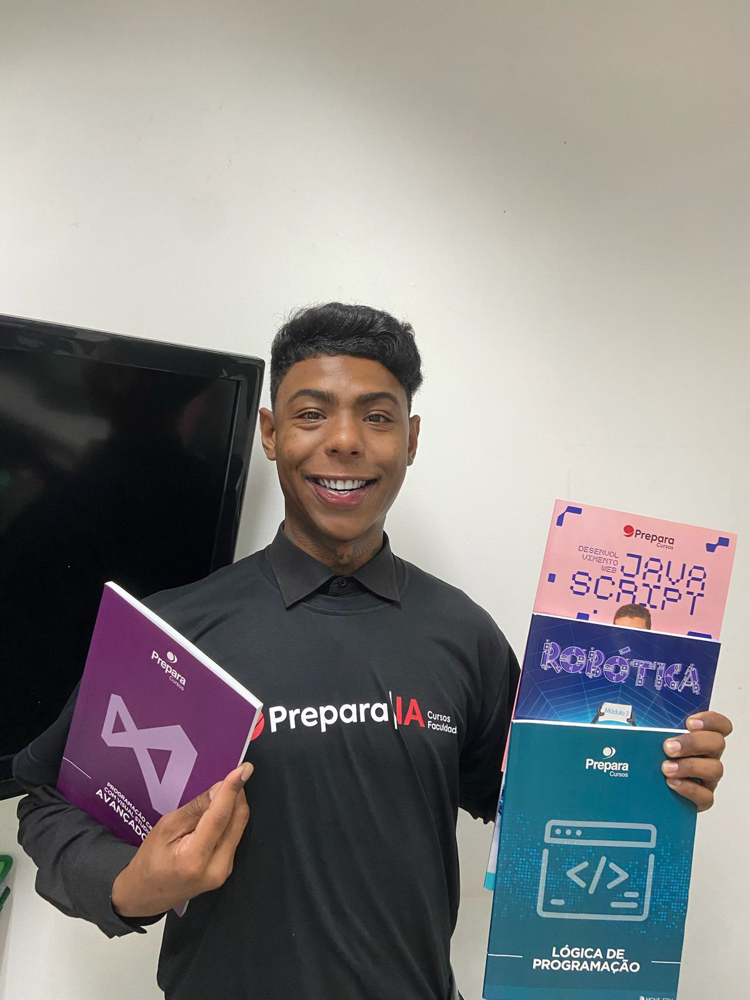
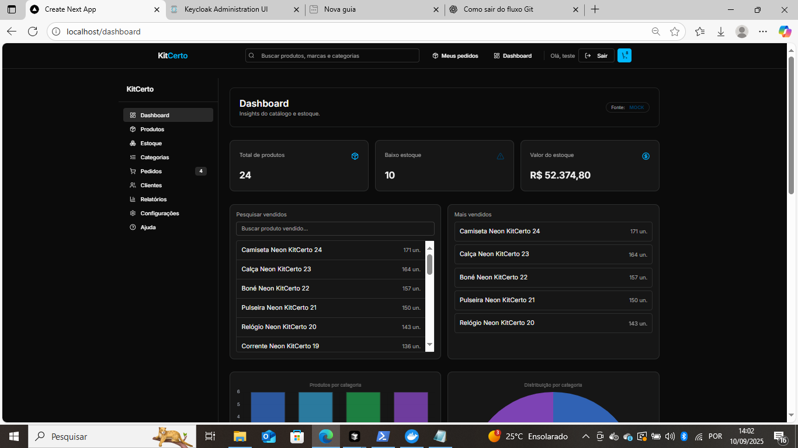
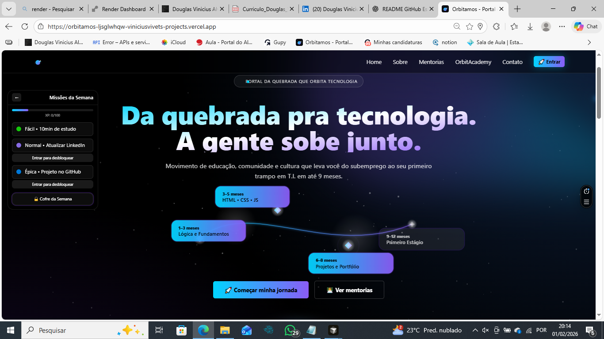
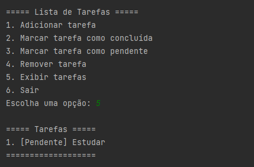
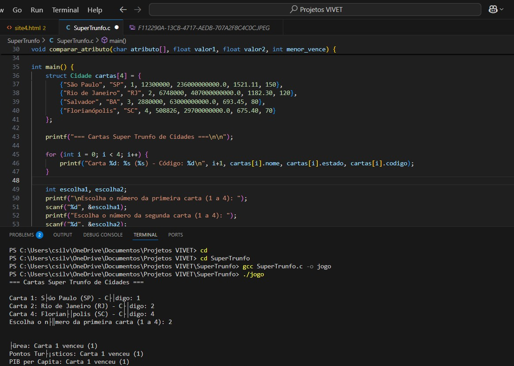

Olá, eu sou o
Douglas Vinicius
Desenvolvedor em Formação.
Sobre Mim

Sou Douglas Vinicius Alves da Silva, estudante de Análise e Desenvolvimento de Sistemas (Estácio) e instrutor de informática desde agosto de 2025, atualmente ministro aulas práticas de programação e tecnologia na faculdade Prepara Cursos IA. Em paralelo, estou em transição sólida para desenvolvimento, com foco em back-end (.NET/C#), arquitetura de sistemas, APIs REST e banco de dados. Nos meus projetos, aplico padrões e ferramentas do mercado como Clean Architecture, CQRS/MediatR, Swagger/OpenAPI, Docker, autenticação/autorização com Keycloak (OIDC/JWT) e bancos de dados como MongoDB e PostgreSQL (Supabase). Com destaque para o KitCerto, um sistema fullstack com painel admin e infraestrutura dockerizada. Busco uma oportunidade como desenvolvedor júnior ou estagiário para ampliar minha atuação com essas práticas em ambiente profissional e crescer junto a um time.
Formação Acadêmica
Análise e Desenvolvimento de Sistemas
Estácio de Sá | Março de 2025 - 2027 (Previsão de Conclusão) | Cursando
- Atualmente no 2º semestre, com base sólida em lógica de programação e fundamentos de TI.
- Foco em desenvolvimento de sistemas e tecnologias web/backend.
- Preparação para desafios práticos e busca por estágio na área.
Minhas Habilidades
Linguagens & Frameworks
HTML5
CSS3
JavaScript
TypeScript
Java (Iniciante)
Python (Básico)
C# / .NET
React
Next.js
Lógica de Programação (C)
Banco & Infra
Banco de Dados (SQL)
Docker
MongoDB
RabbitMQ
Linha de Comando (CLI)
Supabase
Ferramentas & Auth
Git
GitHub
Keycloak
Swagger / APIs REST
Render
Conceitos
Arquitetura Limpa (CQRS/DDD)
Resolução de Problemas
Criatividade
Meus Projetos

KitCerto (Fullstack .NET + Next.js)
Sistema completo de e-commerce/gestão de produtos. Backend em .NET 9 com CQRS/DDD e autenticação Keycloak, frontend em Next.js com Tailwind, banco MongoDB e infraestrutura Docker Compose (dev/prod).

Orbitamos (Plataforma Gamificada)
Plataforma web gamificada para educação prática e transição de carreira em tecnologia, com foco em trilhas, progresso e uma experiência simples de usar. Front em Next.js + TypeScript, com base para API REST (Spring Boot) e persistência em PostgreSQL (Supabase).

Board de Tarefas em Java (POO)
Projeto em Java simulando um Trello, com classes e objetos para gerenciar tarefas. Exercício prático para consolidar Programação Orientada a Objetos (abstração, encapsulamento, herança).

Página Pessoal HTML/CSS/JS
Este próprio portfólio online, desenvolvido para demonstrar habilidades em HTML5, CSS3 e design responsivo e estruturação de projetos web.

Desafio Super Trunfo em C | Estácio
Este projeto implementa uma versão avançada do clássico jogo Super Trunfo em C. Ele simula batalhas entre cartas com dados de cidades brasileiras, demonstrando minha aplicação de lógica complexa, manipulação de dados e interação via console
Minha Experiência
Estudante / Desenvolvedor em Formação
Estácio de Sá | Março de 2025 - Presente- Aplicação prática de lógica de programação em projetos acadêmicos e pessoais utilizando C, Python e Java.
- Desenvolvimento de interfaces básicas com HTML e CSS, focando em usabilidade e design responsivo.
- Colaboração em projetos em grupo, aprimorando habilidades de comunicação e trabalho em equipe.
- Exploração de conceitos de controle de versão utilizando Git e GitHub para gerenciamento de código.
O Que Eu Posso Oferecer
Desenvolvimento Web Fullstack
Aplicações completas com .NET no backend e Next.js/React no frontend, APIs REST, autenticação Keycloak e bancos MongoDB/SQL.
Arquitetura & Boas Práticas
Clean Architecture, CQRS e DDD; uso de padrões de projeto para construir sistemas escaláveis, organizados e de fácil evolução.
Bancos de Dados & Integrações
Experiência com MongoDB e SQL Server: queries, modelagem, seeds e integrações entre serviços em ambientes dockerizados.
Infraestrutura & DevOps
Docker Compose (dev/prod), Nginx como reverse proxy e integração de serviços (Keycloak, RabbitMQ, API e frontend).
Entre em Contato
Se você tem alguma dúvida, proposta de estágio, quer discutir tecnologia ou apenas bater um papo, sinta-se à vontade para me enviar uma mensagem. Responderei o mais breve possível!
- Use um e‑mail válido. Sem e‑mail válido, a mensagem não é enviada.
- Campos obrigatórios: Nome, E‑mail e Mensagem.
- Ao enviar, você verá o status aqui na página e receberá um e‑mail de confirmação.
Um Minigame
Pressione Espaço para pular, P pausar, R reiniciar.